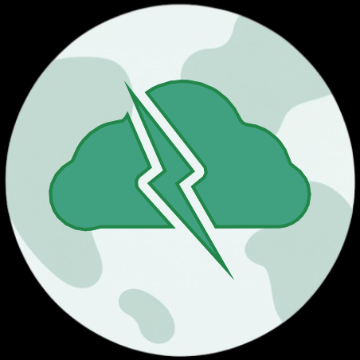
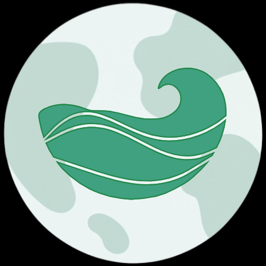
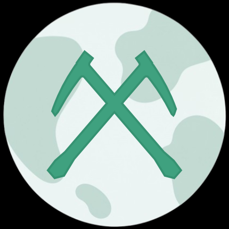
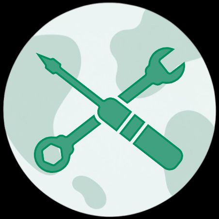
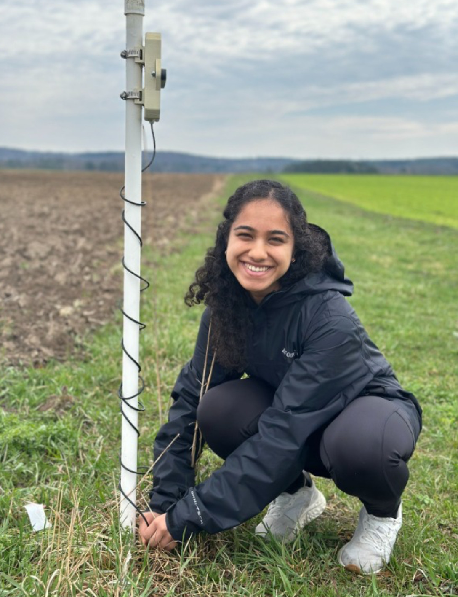
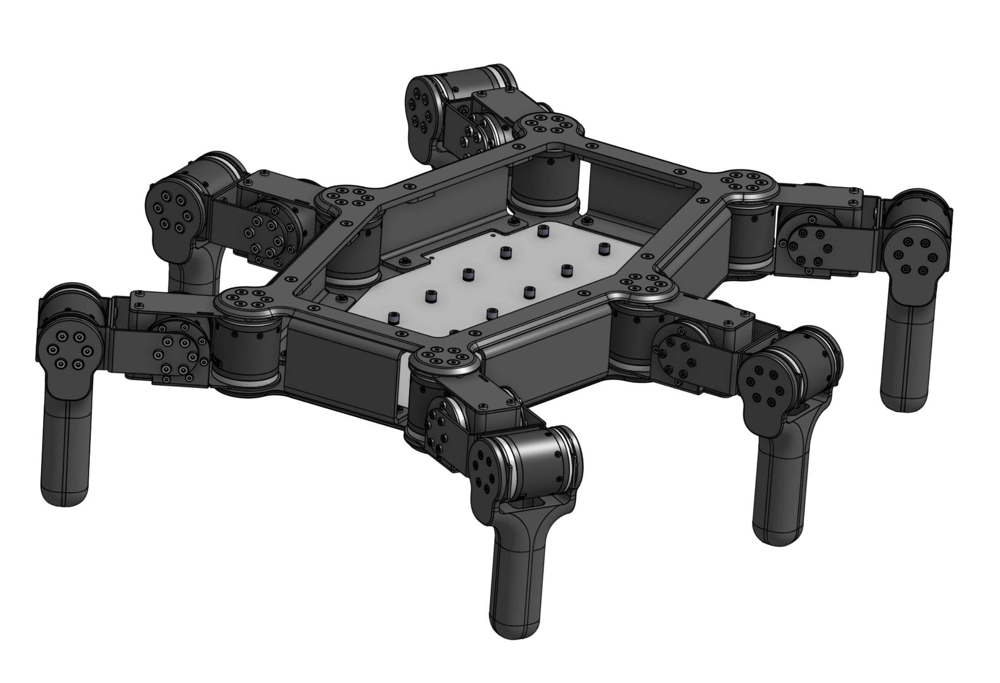
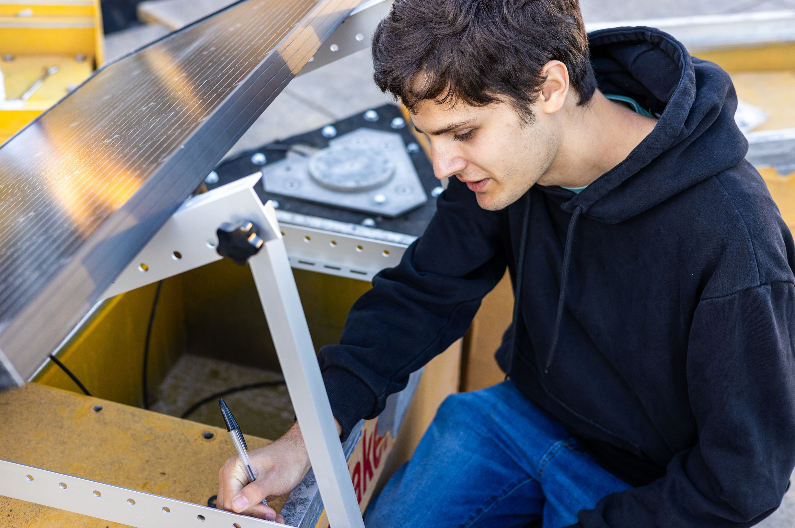
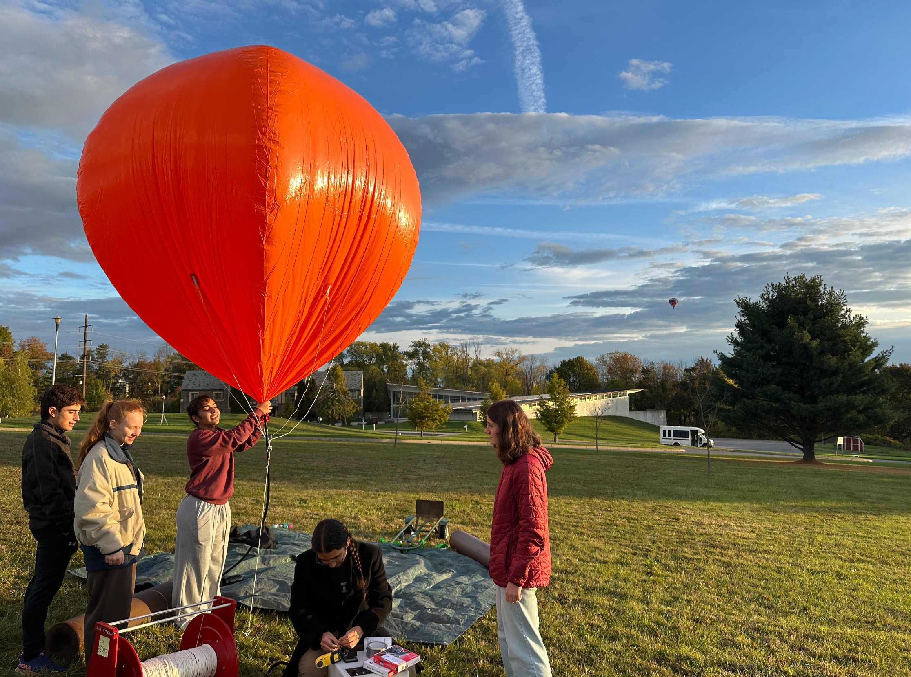
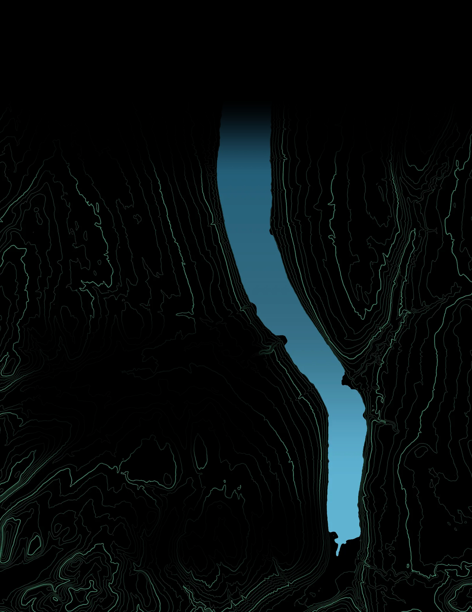
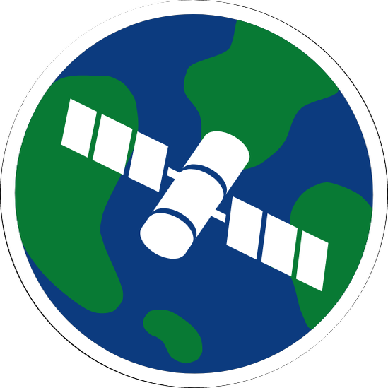

WHO WE ARE
GeoData is a Cornell Engineering project team of {{students}} students. We design, build, deploy and analyze our own sensors and data to study the air, water and ground around the Finger Lakes.
We have six subteams: Air, Water, Rock, Data, Tech and Business. Our members study computer science, environmental engineering, physics, atmospheric science, statistics and more. Every instrument we put in the field is built or deployed by students and teaches the future engineers who will protect our planet.

AIR

WATER

ROCK
DATA

TECH
BUSINESS

TEAM PHOTO 2026
WHY SPONSOR US?
GeoData runs almost entirely on sponsor support. Your contribution goes straight into the parts, sensors, and field deployments that keep our projects running year-round. It puts current technology like LiDAR, machine learning models, and research-grade instruments into the hands of undergraduates who would otherwise only read about it.
Every dollar helps a student design, build, and deploy something that is actually out in the field collecting data. Sponsors get to know these engineers and scientists early, while they're solving real problems.

{{pyramid}}
SPONSORSHIP LEVELS
Each level includes everything below it.
HAVE HARDWARE TO SPARE?
We can use hardware like RAM, graphics cards, CPUs, environmental sensors and LiDAR. It counts toward your level at its value.
OUR CURRENT PROJECTS
LiDAR Hexapod
A walking survey robot we're building with Cornell Physical Intelligence to map 3D terrain. Six legs, two cameras and a Livox LiDAR sensor will scan any area of interest. We're training it in simulation with Isaac Sim, Cosmos and RL gait training to cross textured forest floors, with our own vision models for obstacle detection and path planning.


Cayuga Buoy Station
A research buoy we're refitting and anchoring in Cayuga Lake as a floating water and weather station. Sensors below the surface and a meteorological station above it will record both sides of the exchange that drives lake-effect snow. We're building the mooring, power system and telemetry so it can report live through the season.
Atmospheric Sensors
Two projects that measure the air around Ithaca from the ground up. Our tethersonde flies up to 500 feet, profiling temperature, humidity, pressure and wind through the boundary layer. On the ground, we build 3D-printed weather stations on UCAR's 3DPAWS design at a fraction of commercial cost. Together they will feed a local network for training our own weather models.


WANT TO LEARN MORE?
cugeodata@cornell.edu
Ask for {{contact_name}}, our Business Lead, about the levels, a hardware donation, or the right project for your team.
Give any amount through Cornell Crowdfunding until {{give_until}}. Every gift is a donation to Cornell University, so it's tax-deductible, and you'll get a tax receipt.
SCAN TO GIVE
{{give_label}}
Cornell University federal tax ID 15-0532082


ITHACA